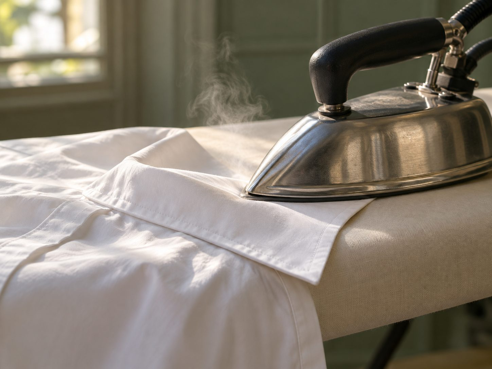
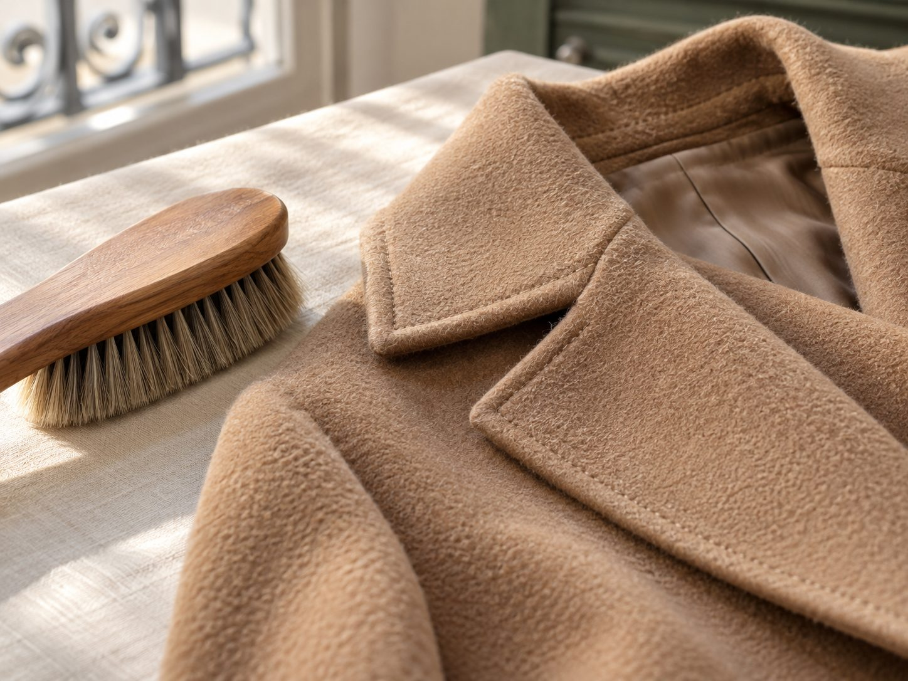
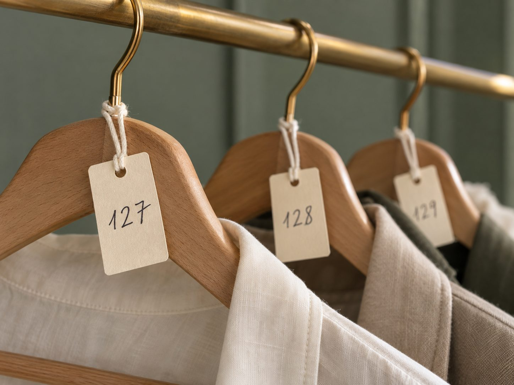

25, rue de l'Abbé-Grégoire · Paris 6e
Pressing, chemises, linge de maison et pièces délicates, traités avec attention par Cathy et son équipe.
Nos services
Le savoir-faire



Le Compte Tourneur
L'équivalent de huit chemises offertes. Vous déposez, on décompte : plus besoin de payer à chaque passage.
25, rue de l'Abbé-Grégoire
75006 Paris
Métro Saint-Placide
Toujours à jour sur notre fiche Google.
Voir les horaires
06 15 44 91 19
Ou directement en boutique